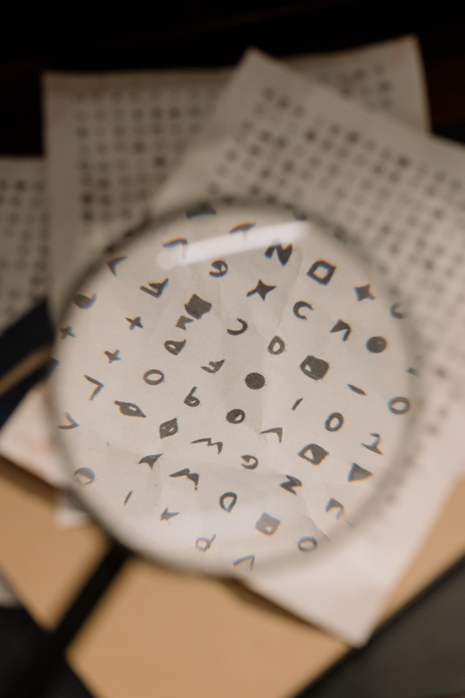

Thanks for visiting my profile page.
I don't consider myself very skilled, but some things I can do well include:

So many things have the potential to interest me.
I love to learn about the world and how it works.
Biology, spirituality, technology, gaming, sports & more...
I'm also a lifelong reader and love a good book!
In my career, I'd love to use the skills I mentioned above, together with what I've learned about life, to be of service to the disadvantaged. I would love to work with children, those who are disabled, and the trans BIPOC community.